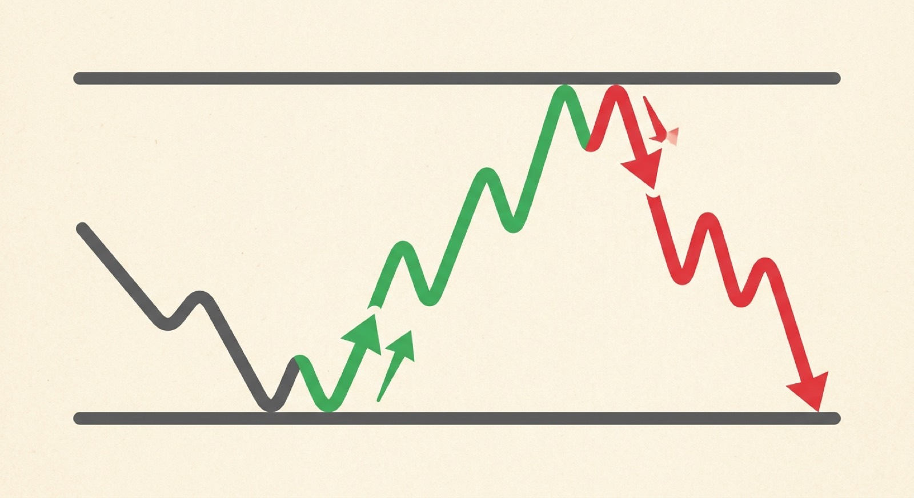

Support & Resistance
Support and resistance
Price stops at the same spots again and again. Those spots have names.

A floor holds price up. A ceiling caps it.
Support
The floor
Buyers keep stepping in here, so the fall stalls and price bounces.
Resistance
The ceiling
Sellers keep showing up here, so the rise stalls and price gets pushed back.
These are zones, not exact lines. Treat a level like a neighborhood, not a single address. The more bounces, the more people are watching it.